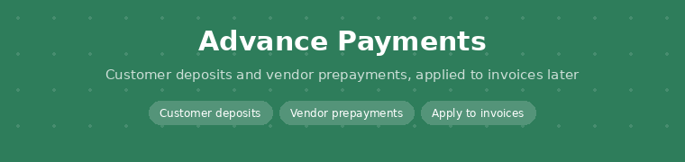
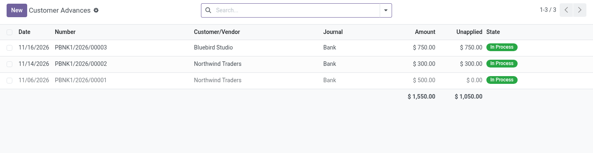
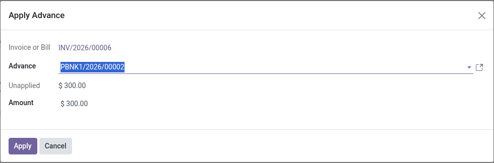
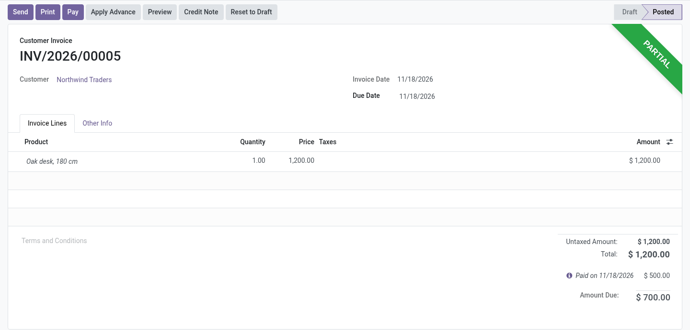

A customer pays a deposit before the invoice, or you prepay a supplier before the bill. Odoo books it on the receivable or payable as an open credit. Advance Payments keeps it on an account of its own, lists what is still unapplied, and moves it onto the invoice or bill when that comes.
Odoo 18.0 Community & Enterprise Free · LGPL-3

Customer Advances: every deposit, and how much of it is not applied yet.
Tick Advance on a payment: it posts to your customer advances (a liability) or vendor prepayments account, not to the receivable or payable.
Customers › Advances and Vendors › Prepayments list every advance with the amount still open.
Apply Advance on a posted invoice or bill proposes the oldest open advance; apply all of it or part.
Applying posts one miscellaneous entry from the advance account to the receivable or payable, reconciled on both sides.
Undo Advance on that entry reverses it: the invoice is due again and the advance is open again.
The same steps for customer deposits on invoices and vendor prepayments on bills, including advances paid by a company's contacts.

Apply Advance on an invoice: the oldest open advance and the amount to apply.

The invoice after applying a $500 deposit: $700 still due.
Free and open source (LGPL-3) by Paulius Gaizauskas · Questions or bugs: GitHub issues